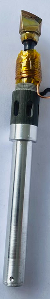
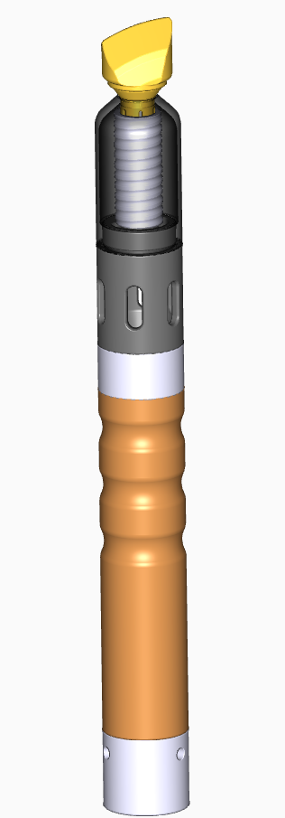
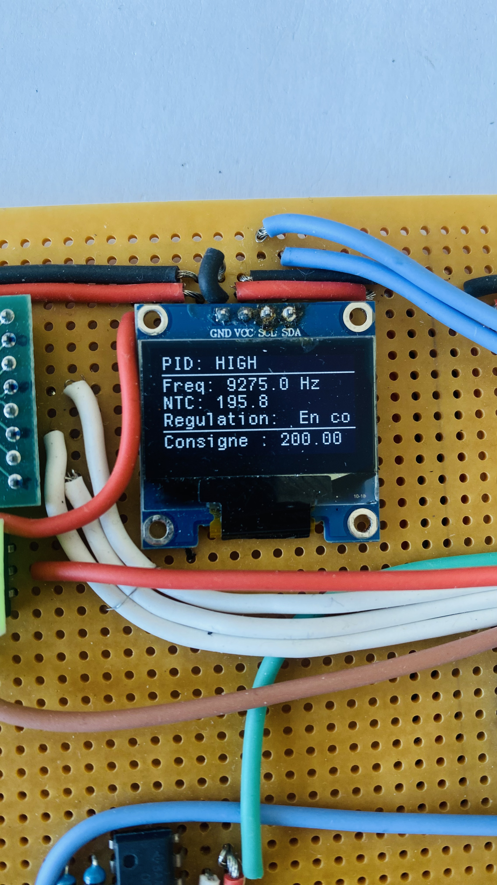

Démonstrateur d'un fer à fieter le cuir chauffant à l'induction
Amélioration et fiabilisation d'un démonstrateur de fer à fileter le cuir chauffant à l'induction pour une société de production d'outils pour le cuir destinés aux sociétés de luxe et ultra-luxe.
Démonstrateur d'un fer à fieter le cuir chauffant à l'induction
Ensemble du démonstrateur incluant la carte de
développement la carte de puissance et le fer à fieter

Panne avec la bobine en cuivre montée sur la manche du
stylet

Vue d'ensemble du stylet

Modèle 3D complet du stylet

Affichage des infos utiles telles que la fréquence, la
température et la consigne.
Objectifs du projet
Durant ce stage de 6 mois, j’ai participé au développement d’un démonstrateur de fer à fileter le cuir pour la société Eprose, visant à remplacer la chauffe résistive traditionnelle par un système à induction capable d’atteindre la température souhaitée en moins d’une minute, avec suivi et interface utilisateur.
Les principales tâches de ce projet incluent différents aspects techniques :
- Conception electronique : découverte et maîtrise progressive des aspects électroniques du démonstrateur, notamment le fonctionnement et la mise en œuvre d’un pont en H pour piloter la chauffe, ainsi que l’intégration des capteurs, de l’alimentation et de l’interface avec le système embarqué. Cette partie m’a permis de renforcer significativement mes compétences en électronique.
- Conception mécanique et optimisation : conception et amélioration de la géométrie de l’outil pour optimiser la transmission de chaleur.
- Développement logiciel et régulation : intégration d’un système embarqué utilisant des capteurs NTC pour la mesure de la température, des capteurs additionnels pour le retour d’information, et des modules de régulation PID assurant un contrôle précis de la température.
- Tests et validation : réalisation d’essais pour observer le comportement du système de régulation, ajustement des coefficients PID, ainsi que tests complémentaires pour étudier la transmission thermique entre les matériaux et sélectionner la forme optimale de l’outil
- Documentation et soutien technique : rédaction de documents techniques et logiciels pour assurer le suivi clair du projet et faciliter la continuité pour les équipes suivantes.
Contenu de l'onglet 2...
Contenu de l'onglet 3...